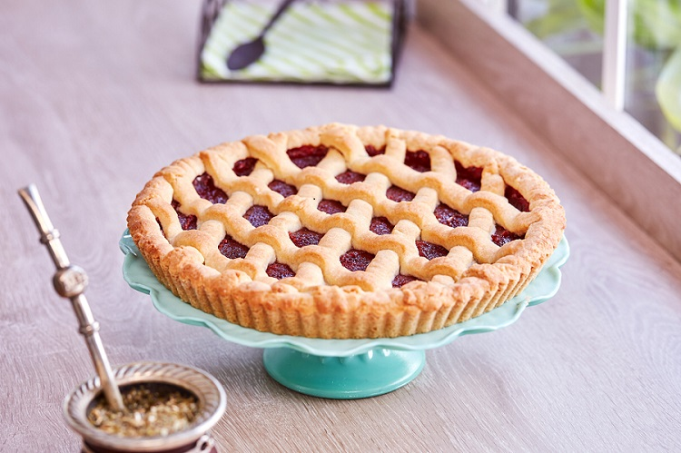

Pasta Frola
A la hora de disfrutar algo rico en familia o con amigos nada como una rica y fácil pasta frola.

RECETA
Ingredientes
- 125 gr manteca
- 125 gr azúcar
- 1 huevo
- 250 gr harina leudante
- 600 gr dulce de membrillo
- ralladura de 1/2 limón
- esencia de vainilla
Procedimiento
- Colocar la manteca y azúcar en un bol. Mezclar hasta incorporar completamente.
- Agregar ralladura de limón, el huevo y la esencia de vainilla. Integrar.
- Agregar la harina leudante y formar un bollo.
- Envolver en papel film y llevar a la heladera mínimo 2 horas.
- Retirar de la heladera. Espolvorear mesa y bollo con harina.
- Con 3/4 partes de la masa estirar y forrar un molde de 26 o 28 cm de diámetro.
- Esparcir el membrillo y formar encima un enrejado con el cuarto de masa restante
- Finalmente, hornear a 190° durante 25 minutos aproximadamente.
Membrillo o Batata? El dilema del relleno
La pastafrola es una tarta artesanal típica de la gastronomía Argentina que, por lo general, se compone de una masa cubierta con dulce de membrillo,
aunque también pueden utilizarse otros rellenos como el dulce de batata.
Para no dejar de lado ninguno, Paulina Cocina nos muestra una Pastafrola Inclusiva, con ambos rellenos.
Para más recetas visita el sitio de Paulina!
También podes descargar los pasos de la receta publicada, ilustrado con imágenes.